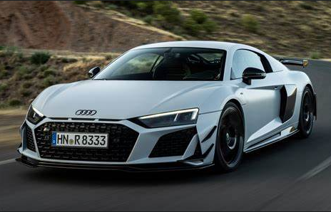

Audi’s logo represents the four companies of Auto Union1.
Audi almost died out after World War II1.
Audi’s Quattro is based on the frame of an old Volkswagen military vehicle1.
Audi had a secret 1000 HP Audi Rally Car1.
Audi is over a hundred years old2.
Audi was the first company to crash test their cars2.
Audi was the first to use a dual-clutch gearbox2.
Audi was the first German carmaker to introduce left-hand drive2.
Audi’s Quattro four-wheel-drive cars revolutionized rallying2.
Audi has won Le Mans 13 times, second only to Porsche3.
Why is audi the best?
We have rated Audi sedans—plus a few four-door hatchback models, which Audi calls Sportback—on a 10-point scale based on roughly 200 data points
encompassing acceleration, handling, comfort, cargo space, fuel efficiency, value, and how enjoyable they are to drive.
